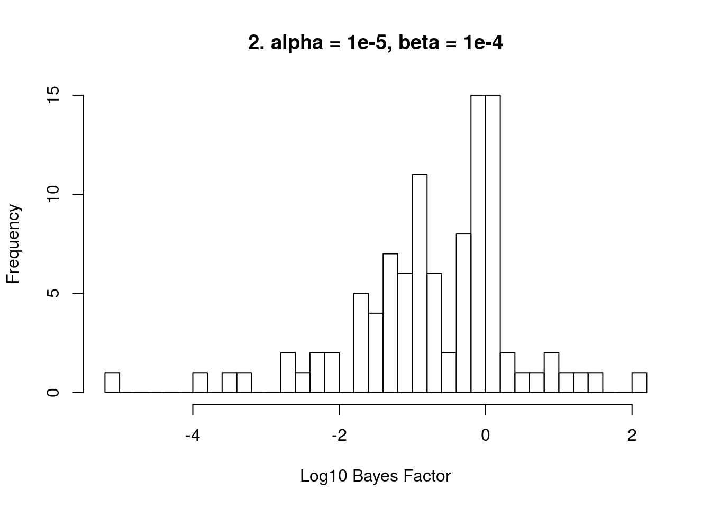
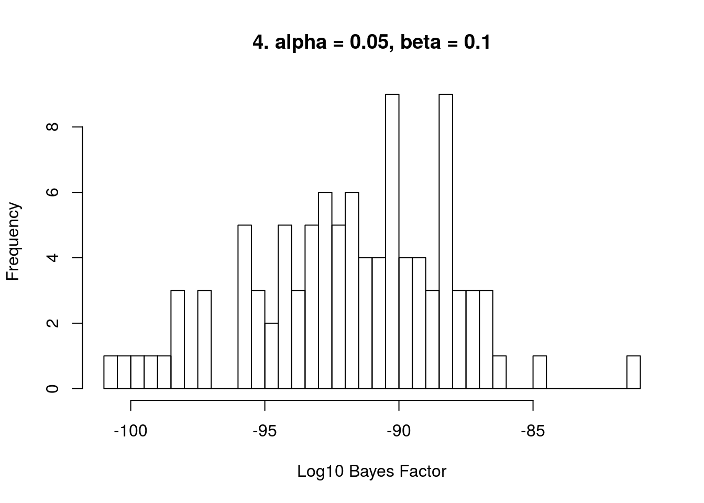
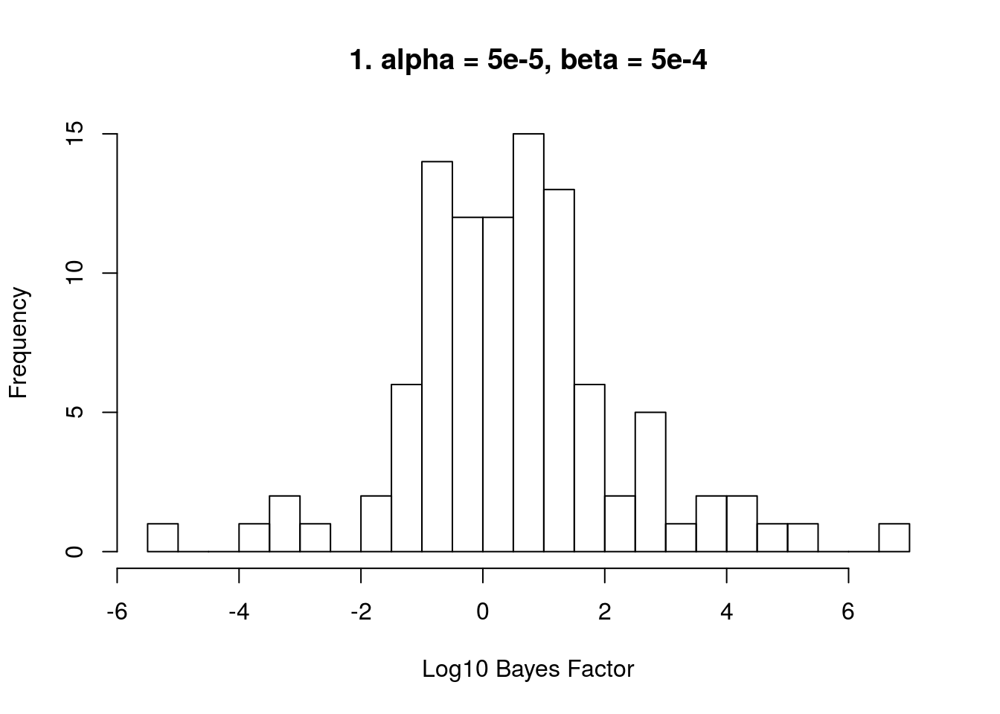
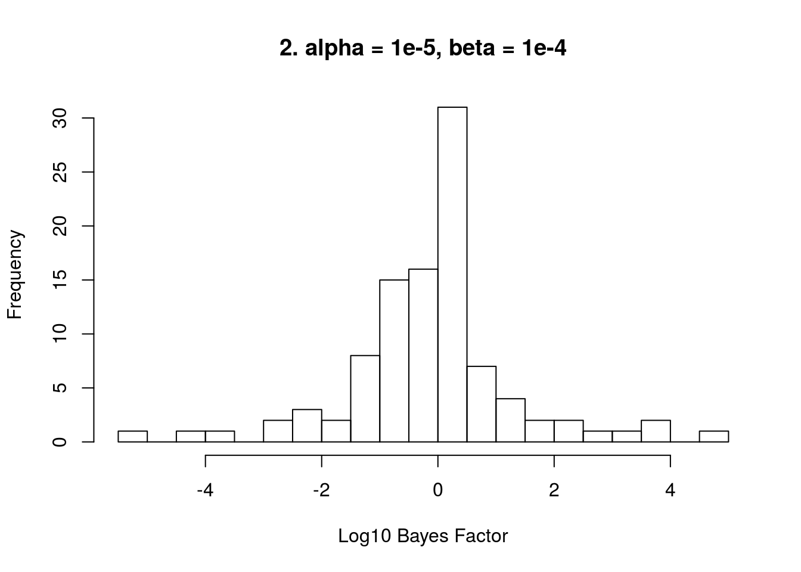
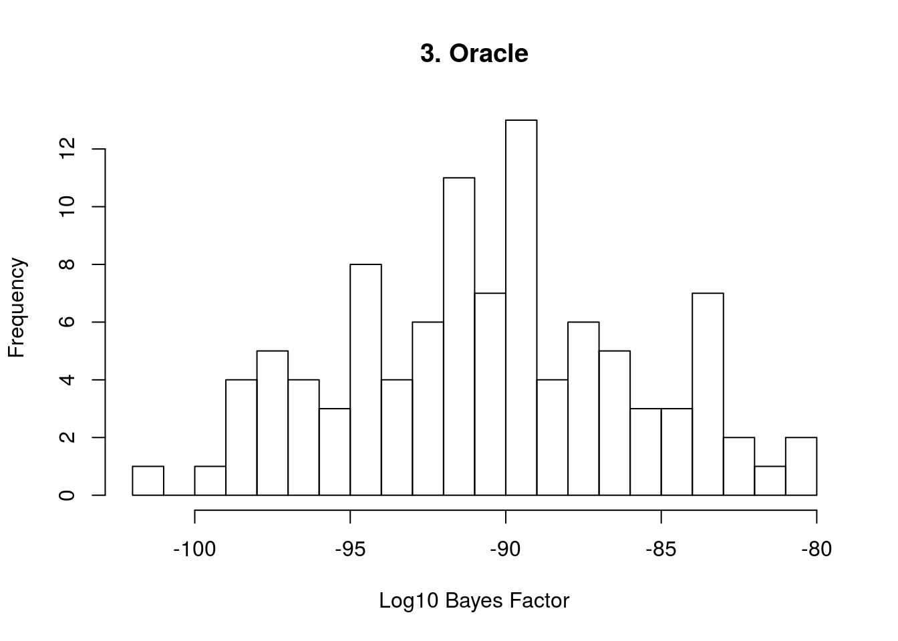
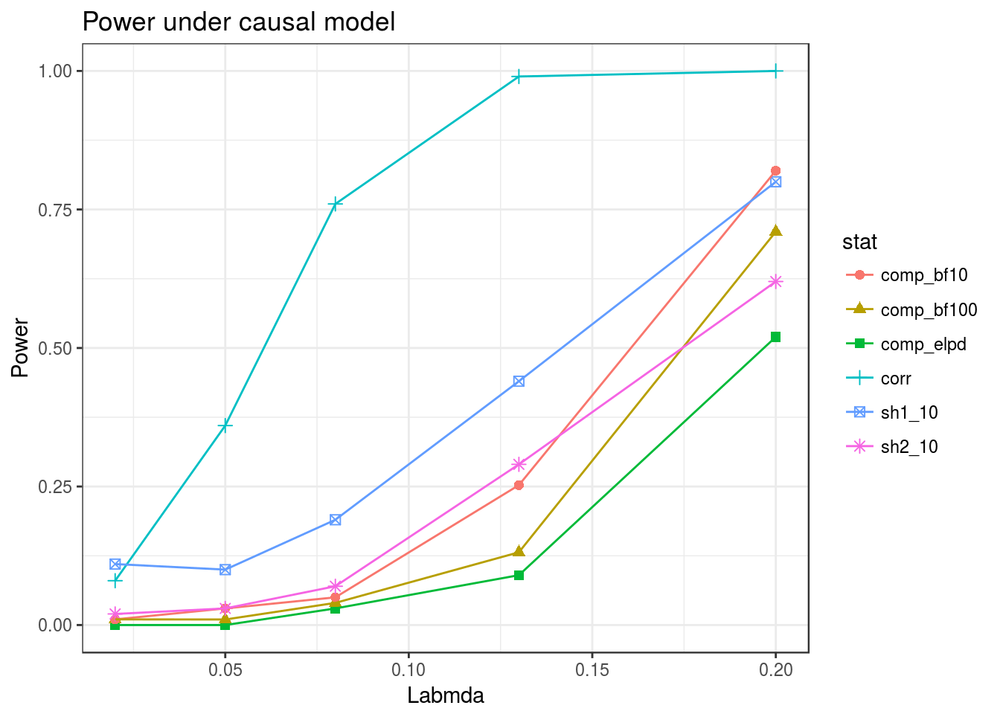

In this document I apply the original Sherlock method to simulations described here. To run these I added an option of “sherlock1” to the type argument that can be given to sim_sherlock_flex.
I run the original sherlock using four different values of \(\alpha = P[U_i = 1]\) and \(\beta = P[V_i = 1 \vert\ Z = 0] = P[V_i = 1 \vert\ U_i = 0 \text{ and } Z = 1]\). These are
Data are simulated so that \(\beta_1\) and \(\beta_2\) are completely independent. Both \(\beta_1\) and \(\beta_1\) are simulated from mixtures of normal distributions specified by the following tables:
\(\beta_1\) (\(g_1\)):
| Proportion | 0.948 | 0.03 | 0.02 | 0.002 |
|---|---|---|---|---|
| Mean | 0 | 0 | 0 | 0 |
| \(\sqrt{var}\) | 0 | 0.08 | 0.1 | 0.2 |
\(\beta_{2}\) (\(g_{20} = g_{21}\)):
| Proportion | 0.9 | 0.1 |
|---|---|---|
| Mean | 0 | 0 |
| \(\sqrt{var}\) | 0 | 0.05 |
This gives an average of 520 eQTLs, 20 of which are strong eQTLs and about 1000 GWAS SNPs. The average heritability of gene expression is about 0.53 and the average heritability of the phenotype is abuot 0.37.
library(sherlockAsh)## Warning: replacing previous import 'ks::compare' by 'loo::compare' when
## loading 'sherlockAsh'library(ashr)
g1n <- normalmix(pi=c(0.948, 0.03, 0.02, 0.002),
mean=rep(0, 4),
sd=c(0, 0.08, 0.1, 0.2))
g1 <- function(p){ rnormalmix(p, g1n)}
g20 <- normalmix(pi=c(0.9, 0.1), mean=rep(0, 2), sd=c(0, 0.05))
g2 <- function(b1){ rnormalmix(length(b1), g20)}
maf.func <- function(p){rbeta(n=p, 1, 5)}
#Run sherlock1 on simulations
res1 <- sim_sherlock_flex(n.rep=100, p=10000, g1=g1, g2=g2,
maf.func=maf.func, n1=500, n2=5000,
types=c("sherlock1"), seed=1234567)Here are histograms of the log10 Bayes factor for each of the four values of the priors described in the first section.
res1$sherlock1 <- res1$sherlock1/log(10) #Convert to log10
main = c("1. alpha = 5e-5, beta = 5e-4", "2. alpha = 1e-5, beta = 1e-4", "3. Oracle", "4. alpha = 0.05, beta = 0.1")
for(i in 1:4){
hist(res1$sherlock1[, i], breaks=30, main=main[i], xlab="Log10 Bayes Factor")
}
All four values of the prior give good type 1 error but the third and fourth give dramatically negative Bayes factors. These priors are both larger than the the first and second priors but are closer to the values used to generate the data.
In this scheme, there is still no causal relationship between the two traits but they share more causal variants than might be expected by chance. This pattern might arise if the two traits share some regualtors. eQTL effects \(\beta_1\) are drawn from the same distribution as in the previous section. SNPs that are eQTLs have a 50% chance of being effecting the phenotype while SNPs that are not eQTLs only have a 10% chance of effecting the phenotype. This scenario is encoded by the functions g1 and g2:
g1n <- normalmix(pi=c(0.948, 0.03, 0.02, 0.002),
mean=rep(0, 4),
sd=c(0, 0.08, 0.1, 0.2))
g1 <- function(p){ rnormalmix(p, g1n)}
g20 <- normalmix(pi=c(0.9, 0.1),mean=rep(0, 2),sd=c(0, 0.05))
g21 <- normalmix(pi=c(0.5, 0.5),mean=rep(0, 2),sd=c(0, 0.05))
g2 <- function(b1){
p <- length(b1)
nz <- sum(b1==0)
b2 <- rep(NA, p)
b2[b1==0] <- rnormalmix(nz, g20)
b2[b1!=0] <- rnormalmix(p-nz, g21)
return(b2)
}
#Calculate the average heritability and correlation of effect sizes
res2 <- sim_sherlock_flex(n.rep=100, p=10000, g1=g1, g2=g2,
maf.func=maf.func, n1=500, n2=5000,
types=c("sherlock1"), seed=1234567)Plotting
res2$sherlock1 <- res2$sherlock1/log(10) #Convert to log10
main = c("1. alpha = 5e-5, beta = 5e-4", "2. alpha = 1e-5, beta = 1e-4", "3. Oracle", "4. alpha = 0.05, beta = 0.1")
for(i in 1:4){
hist(res2$sherlock1[, i], breaks=30, main=main[i], xlab="Log10 Bayes Factor")
}
The patterns are similar but there are more type 1 errors. Here I compare the type 1 error for the two null models for the first two prior values at different BF cutoffs. These are not shown for the larger priors because all BFs are extremely negative making the type 1 error rate equal to zero for all constants.
library(tidyr)
library(ggplot2)
log_bf_cutoff <- seq(0, 4, length.out=10)
t1e <- data.frame("logbf"=log_bf_cutoff)
t1e$prior1_ci <- sapply(log_bf_cutoff, FUN=function(s){mean(res1$sherlock1[,1] > s)})
t1e$prior2_ci <- sapply(log_bf_cutoff, FUN=function(s){mean(res1$sherlock1[,2] > s)})
t1e$prior1_coreg <- sapply(log_bf_cutoff, FUN=function(s){mean(res2$sherlock1[,1] > s)})
t1e$prior2_coreg <- sapply(log_bf_cutoff, FUN=function(s){mean(res2$sherlock1[,2] > s)})
t1e_long <- gather(t1e, "stat", "t1e", -logbf)
ggplot(t1e_long) + geom_point(aes(x=logbf, y=t1e, group=stat, color=stat, shape=stat), size=2) +
geom_line(aes(x=logbf, y=t1e, group=stat, color=stat)) +
geom_vline(xintercept = log10(2), linetype=2) + geom_vline(xintercept = 1, linetype=2) +
geom_vline(xintercept = 2, linetype=2) +
xlab("Log10 BF Cutoff") + ylab("Tye 1 Error") + ggtitle("Original Sherlock - Type 1 Error") +
theme_bw()for(i in 1:2){
cat("Type 1 error: ", main[i], "\n", "2 ", mean(res1$sherlock1[,i] > log10(2)),
" 10 ", mean(res1$sherlock1[,i] > 1), " 100 ", mean(res1$sherlock1[,i] > 2), "\n",
"2 ", mean(res2$sherlock1[,i] > log10(2)),
" 10 ", mean(res2$sherlock1[,i] > 1), " 100 ", mean(res2$sherlock1[,i] > 2), "\n"
)
}## Type 1 error: 1. alpha = 5e-5, beta = 5e-4
## 2 0.26 10 0.08 100 0.03
## 2 0.55 10 0.34 100 0.15
## Type 1 error: 2. alpha = 1e-5, beta = 1e-4
## 2 0.1 10 0.04 100 0.01
## 2 0.25 10 0.13 100 0.07When data is generated in the complete independence setting, a BF cutoff of 10 gives a type 1 error of 0.04 using prior value 1 or 0.01 using prior value 2. Hoewver, when data is generated under the co-regulation model type 1 error rates are much higher using both priors. A cutoff of 10 gives a type 1 error rate of 33% using prior 1 or 14% using prior 2. So the original Sherlock may generate false positives when there are shared regulatory pathways but not causality between the gene and the phenotype.
In these simulations, there is a causal relationship between the two traits. We generate \(\beta_1\) as in the previous sections. \(\beta_2\) is generated as \(\lambda \beta_1 + u\) where \(u\) is drawn from the \(g_2\) distribution used in previous sections — that is the mixture given by the table
\(g_2\) mixture compononents:
| Proportion | 0.9 | 0.1 |
|---|---|---|
| Mean | 0 | 0 |
| \(\sqrt{var}\) | 0 | 0.05 |
We will consider values of \(\lambda\) of 0.02, 0.05, 0.08, 0.13 and 0.2. These correspond to correlations between between \(\beta_1\) and \(\beta_2\) for SNPs that effect both traits of 0.13, 0.3, 0.44, 0.62 and 0.77 respectively. The functions encoding this scenario are:
g1n <- normalmix(pi=c(0.948, 0.03, 0.02, 0.002),
mean=rep(0, 4),
sd=c(0, 0.08, 0.1, 0.2))
g1 <- function(p){ rnormalmix(p, g1n)}
g20 <- g21 <- normalmix(pi=c(0.9, 0.1),
mean=rep(0, 2),
sd=c(0, 0.05))
maf.func <- function(p){rbeta(n=p, 1, 5)}
res_sh <- list()
for(i in 1:5){
lambda <- c(0.02, 0.05, 0.08, 0.13, 0.2)[i]
g2 <- function(b1){
p <- length(b1)
nz <- sum(b1==0)
b2 <- rep(NA, p)
b2[b1==0] <- rnormalmix(nz, g20)
b2[b1!=0] <- lambda*b1[b1!=0] + rnormalmix(p-nz, g21)
return(b2)
}
res_sh[[i]] <- sim_sherlock_flex(n.rep=100, p=10000, g1=g1, g2=g2,
maf.func=maf.func, n1=500, n2=5000,
types=c("sherlock1"), seed=1234567)
}Plotting the power of the original Sherlock usng a BF cutoff of 10 along with the power of the other approaches compared previously. Using the larger priors, the BFs are still very negative even in the presence of correlation. Here we only show power for the first two priors which are labeled sh1_10 and sh2_10 respectively.
res <- list()
lams <- c(0.02, 0.05, 0.08, 0.13, 0.2)
for( i in 1:5){
res[[i]] <- getobj(paste0("../data/res_causal_", lams[i], ".RData"))
}
power <- data.frame("lambda"=lams)
power$comp_bf10 <- power$comp_bf100 <- power$comp_elpd <- power$corr <- NA
power$sh1_10 <- power$sh2_10 <- NA
for(i in 1:5){
corrstats <- res[[i]]$corr[2, , 1]/res[[i]]$corr[2, , 2]
comp_elpd <- res[[i]]$comp[1, , 5]/res[[i]]$comp[1, , 6]
comp_bf <- res[[i]]$comp[1, , 7]/log(10)
power$comp_bf10[i] <- mean(comp_bf > 1, na.rm=TRUE) #One missing BF
power$comp_bf100[i] <- mean(comp_bf > 2, na.rm=TRUE) #One missing BF
power$comp_elpd[i] <- mean(comp_elpd > qnorm(0.95))
power$corr[i] <- mean(abs(corrstats) > qnorm(0.975))
power$sh1_10[i] <- mean(res_sh[[i]]$sherlock1[,1] > 1)
power$sh2_10[i] <- mean(res_sh[[i]]$sherlock1[,2] > 1)
}
power_long <- gather(power, "stat", "power", -lambda)
ggplot(power_long) + geom_point(aes(x=lambda, y=power, group=stat, color=stat, shape=stat), size=2) +
geom_line(aes(x=lambda, y=power, group=stat, color=stat)) +
xlab("Labmda") + ylab("Power") + ggtitle("Power under causal model") +
theme_bw()
This R Markdown site was created with workflowr